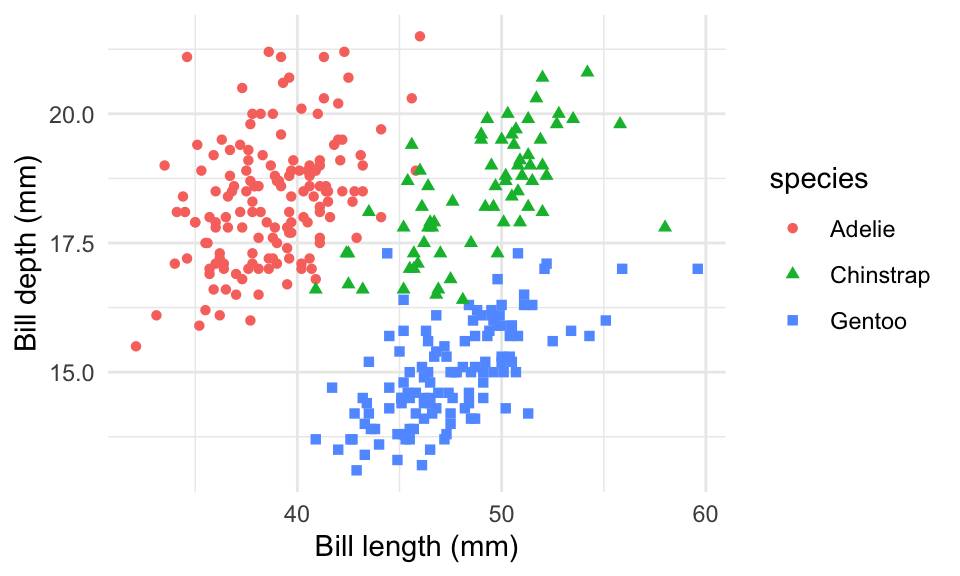

Rows: 344
Columns: 8
$ species <fct> Adelie, Adelie, Adelie, Adelie, Adelie, Adelie, Adel…
$ island <fct> Torgersen, Torgersen, Torgersen, Torgersen, Torgerse…
$ bill_length_mm <dbl> 39.1, 39.5, 40.3, NA, 36.7, 39.3, 38.9, 39.2, 34.1, …
$ bill_depth_mm <dbl> 18.7, 17.4, 18.0, NA, 19.3, 20.6, 17.8, 19.6, 18.1, …
$ flipper_length_mm <int> 181, 186, 195, NA, 193, 190, 181, 195, 193, 190, 186…
$ body_mass_g <int> 3750, 3800, 3250, NA, 3450, 3650, 3625, 4675, 3475, …
$ sex <fct> male, female, female, NA, female, male, female, male…
$ year <int> 2007, 2007, 2007, 2007, 2007, 2007, 2007, 2007, 2007…Objective — Demonstrate reproducible regression-modelling workflows for epidemiological and ecological data.
Methods — Exploratory analysis, linear and generalised regression, model diagnostics, and visualisation.
Tools — R (tidyverse, tidymodels, ggplot2).
This page is a methods demonstration and is being expanded.
Introduction
Data
I start it with the penguins dataset from @palmerpenguins package [@corsi2021]
Species
Figure 1 is a scatter plot of species of penguins
Show the code
ggplot(penguins,
aes(x = bill_length_mm, y = bill_depth_mm,
color = species, shape = species)
)+
geom_point()+
theme_minimal()+
#scale_color_continuous()+
labs(x= "Bill length (mm)", y="Bill depth (mm)")Warning: Removed 2 rows containing missing values or values outside the scale range
(`geom_point()`).
Penguins
Table 1 below shows first 10 penguins from the dataset.
Show the code
penguins|>
slice_head(n=10)|>
select(species, island, bill_length_mm, bill_depth_mm)|>
gt()| species | island | bill_length_mm | bill_depth_mm |
|---|---|---|---|
| Adelie | Torgersen | 39.1 | 18.7 |
| Adelie | Torgersen | 39.5 | 17.4 |
| Adelie | Torgersen | 40.3 | 18.0 |
| Adelie | Torgersen | NA | NA |
| Adelie | Torgersen | 36.7 | 19.3 |
| Adelie | Torgersen | 39.3 | 20.6 |
| Adelie | Torgersen | 38.9 | 17.8 |
| Adelie | Torgersen | 39.2 | 19.6 |
| Adelie | Torgersen | 34.1 | 18.1 |
| Adelie | Torgersen | 42.0 | 20.2 |